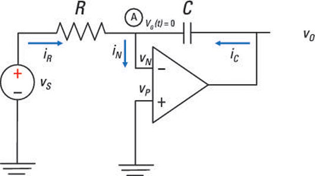

CMOS
- Explain the Complimentary Metal Oxide Semiconductor (CMOS) process.
- Discuss the three different operating regions of Metal Oxide Semiconductor Field Effect Transistor (MOSFET).
- Describe the Voltage Transfer Characteristics (VTC) of a CMOS inverter.
- Explain the five different operating regions in the VTC of a CMOS inverter and noise margins
- Explain the operation of CMOS Transmission Gate (TG)
Latches & Flip-Flop
- Explain latches and flip-flops.
- Discuss clocked Set Reset latch (SR) and SR Flip-Flop
- Explain clocked JK latch
- Explain clocked,edged D Flip-Flop
- Explain Master slave Flip-flops
Semiconductor Memories
- Discuss the different types of semiconductor memories and memory array organisation.
- Discuss the read, write and refresh operations of Dynamic Random Access Memory (DRAM).
- Explain the read and write operations of Static Random Access Memory (SRAM).
- Explain the operation of Read-only Memory (ROM) and the different types of implementation.

Feedback circuit
- Explain the general feedback structure and characteristics of a negative feedback amplifier
- Discuss the four feedback topologies.
- Describe the procedures of feedback amplifier analysis.
- Execute the examples on negative feedback amplifier.
- Identify the Gain (𝐴𝑓), Input Impedance 𝑅𝑖𝑓and Output Impedance (𝑅𝑜𝑓)of a feedback amplifier.